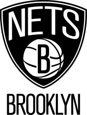

Brookly Nets

Brooklyn Nets so ameriška profesionalna košarkarska ekipa s sedežem v newyorški četrti Brooklyn. Nets tekmujejo v Nacionalni košarkarski zvezi (NBA) kot član Atlantske divizije vzhodne konference. Domače tekme moštvo igra v Barclays Centru. So ena od dveh ekip NBA v New Yorku; drugi so New York Knicks. Klub je bil ustanovljen leta 1967 kot čarterska franšiza tekmeca lige NBA, Ameriške košarkarske zveze (ABA). V svoji prvi sezoni so igrali v New Jerseyju kot New Jersey Americans, preden so se leta 1968 preselili na Long Island v New Yorku in spremenili svoje ime v New York Nets. V tem času so Netsi osvojili dva naslova ABA (leta 1974 in 1976). Leta 1976 se je ABA združila z NBA in Nets so bili vključeni v NBA skupaj s tremi drugimi ABA ekipami (San Antonio Spurs, Indiana Pacers in Denver Nuggets), ki vse ostajajo v ligi do danes. Leta 1977 se je ekipa vrnila v New Jersey in od leta 1977 do 2012 igrala kot New Jersey Nets. Pod vodstvom zvezdnika Jasona Kidda so Netsi v dveh zaporednih sezonah lige NBA (2001–02 in 2002–03) dosegli finale lige NBA. vendar mu ni uspelo osvojiti prvenstva. Poleti 2012 se je ekipa preselila v Barclays Center v Brooklynu [12] in tako postala prva večja športna franšiza v okrožju po odhodu bejzbolske ekipe Brooklyn Dodgers leta 1957 [13]. Od selitve v Brooklyn so se Netsi osemkrat uvrstili v končnico, vključno s potovanji v konferenčni polfinale v letih 2014 in 2021.
Trenutna ekipa

Sezona 2022–2023 Brooklyn Nets je bila 47. sezona franšize v Nacionalni košarkarski zvezi (NBA), 56. sezona na splošno in 11. sezona igranja v newyorškem okrožju Brooklyn. 1. novembra 2022 je bil Steve Nash odpuščen z mesta glavnega trenerja Netsov, potem ko je ekipa začela sezono z rezultatom 2–5, zamenjal pa ga je Jacque Vaughn na začasni osnovi.[1][2] 9. novembra je bil Vaughn imenovan za novega glavnega trenerja. 7. aprila 2023 so Netsi osvojili mesto v končnici po zmagi s 101–84 proti Orlando Magic.[4] V prvem krogu končnice lige NBA 2023 so se pomerili z ekipo Philadelphia 76ers in izgubili serijo s 4–0.[5] Netsi so bili tretjič v štirih sezonah pometeni v prvem krogu končnice (tudi v končnicah 2020 in 2022)